How to Install and Configure Ubuntu Desktop (Beginner Guide)
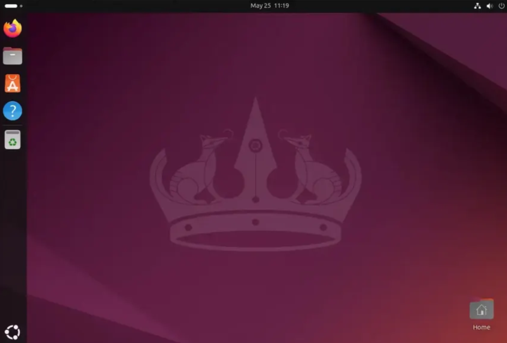This guide will help you, step by step, to install Ubuntu Desktop on your computer. It is written for beginners, so you do not need any experience with Linux. We will use many pictures to make everything clear. If you follow each step, you will have Ubuntu running in no time!
Step 1: Download Ubuntu and Create a Bootable USB Stick
-
Download Ubuntu:
Go to the official Ubuntu website and click on the download button. Save the file (called an ISO) somewhere you can find it.
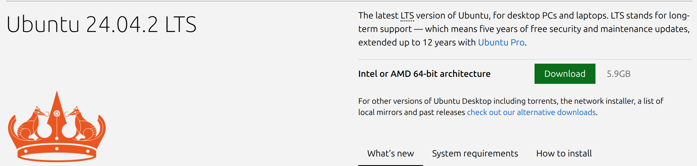 -
Prepare a USB Stick:
Find a USB stick with at least 8GB of space. If there is any data on your USB stick, make a backup first. Make sure there is nothing important on it, because it will be erased!
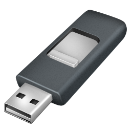 -
Write Ubuntu to the USB Stick:
- On Windows: Download and open Rufus. Select your USB stick and the Ubuntu ISO file, then click Start.
- On Mac or Linux: Download and open balenaEtcher. Select the ISO file and your USB stick, then click Flash.
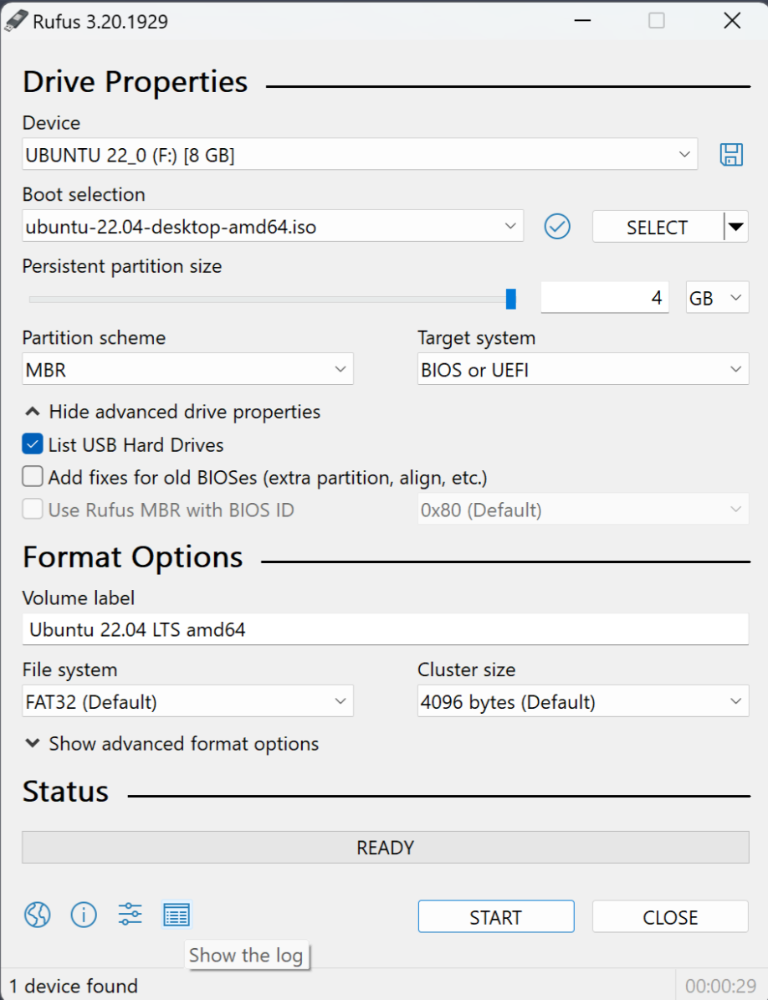 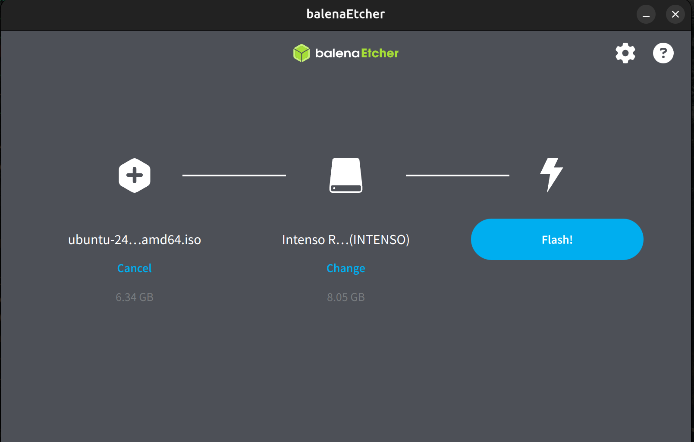Wait until the process is finished. Then safely remove the USB stick from your computer.
Step 2: Boot from USB and Start Installation
-
Insert the USB Stick: Plug the USB stick into the computer where you want to install
Ubuntu.
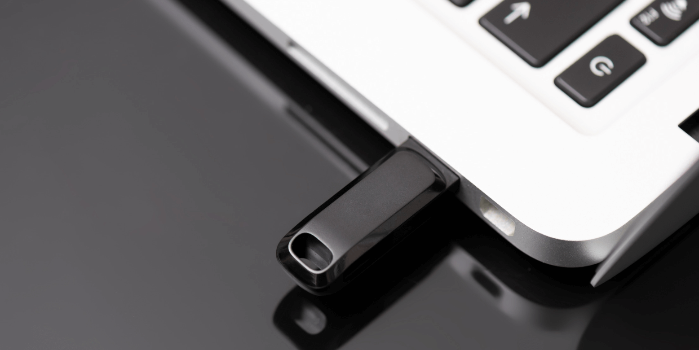 -
Restart the Computer: Turn on (or restart) the computer. You need to make the computer
boot from the USB stick instead of the hard drive.
Important: The key to open the boot menu differs per brand/model. Common keys are F12, ESC, F2, F9, or DEL. When your computer starts, look for a message like "Press F12 for Boot Menu" or "Boot Options".
- For example: HP ProBook G8: F9
- Dell: F12
- Lenovo: F12 or Enter
- Acer: F12
- Asus: ESC
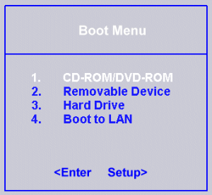 -
Open the Boot Menu: Press the key for the boot menu (often F12, ESC, F2, or DEL)
when the computer starts. Choose the USB stick from the list.
-
Start Ubuntu: Select Try or Install Ubuntu from the menu and press Enter.
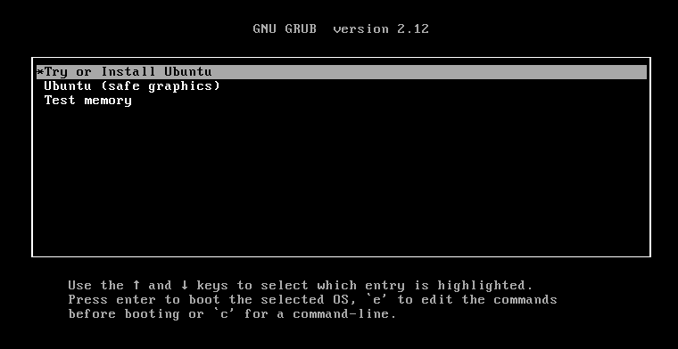
Step 3: Complete the Installation
-
Choose Language: Select your language and click Install Ubuntu.
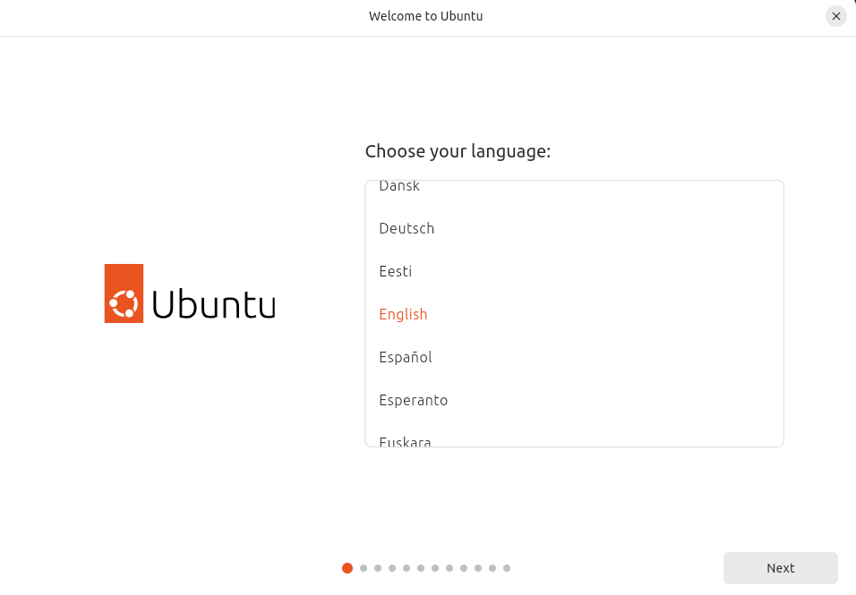 -
Keyboard Layout: Choose your keyboard layout and click Continue.
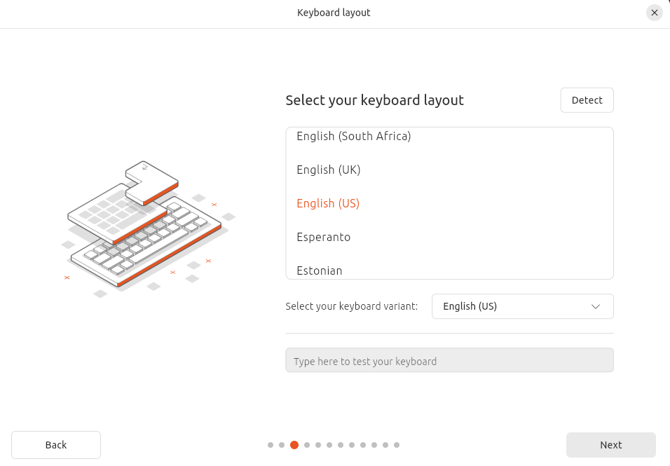 -
Updates and Other Software: Choose Normal installation and check the boxes for
updates and third-party software if you want. Click Continue.

-
Installation Type: Choose Erase disk and install Ubuntu to erase everything; or
Something else to do custom partitioning.
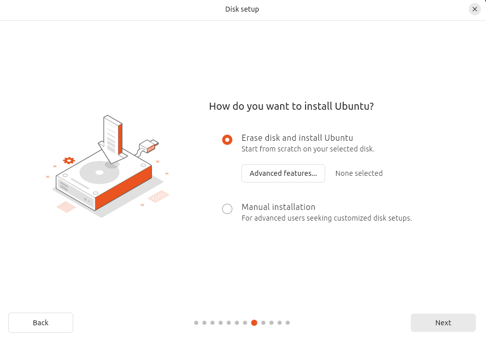 -
Set Your Location: Click on the map or enter your city and click Continue.
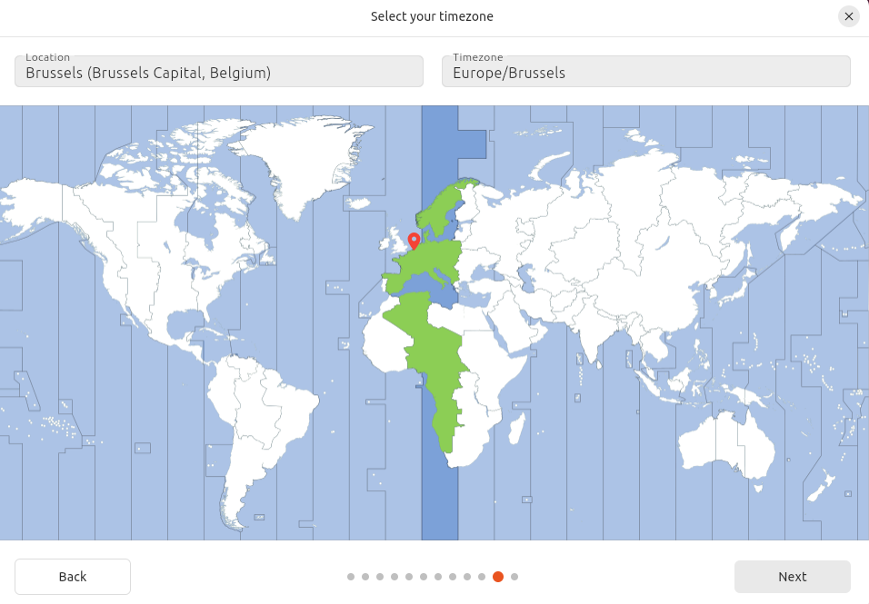 -
Create Your User: Enter your name, computer name, username, and password. Write down
your password!
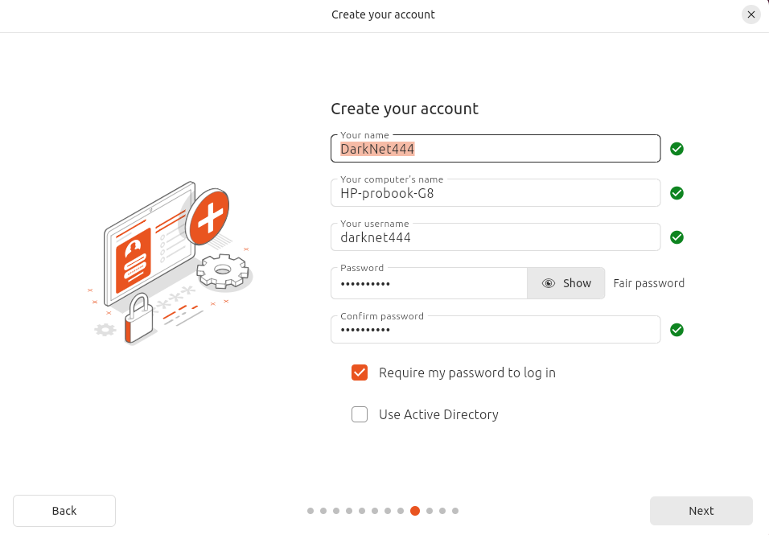 -
Wait for Installation: The install will take 10-20 minutes. When finished, click
Restart Now.
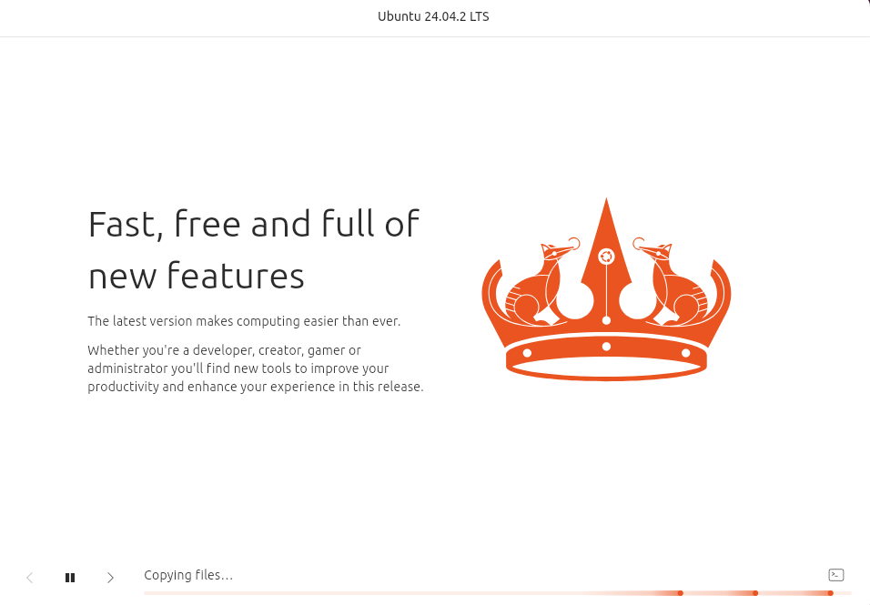 -
Remove the USB Stick: When rebooting, remove the USB stick when prompted.
Step 4: First Boot and Initial Configuration
-
Log In: Enter your password to log in.
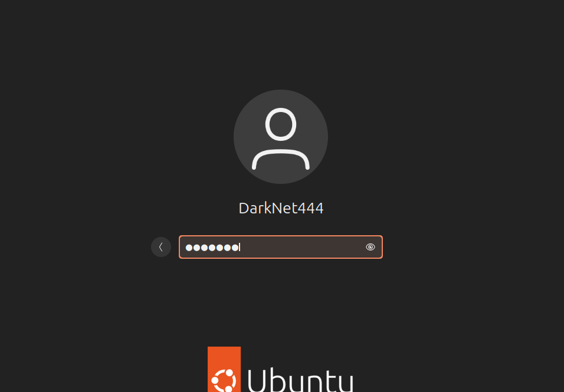 -
Check for Updates: Open terminal (Ctrl+Alt+T) and run:
Press Enter and enter password if required.
sudo apt update && sudo apt upgrade
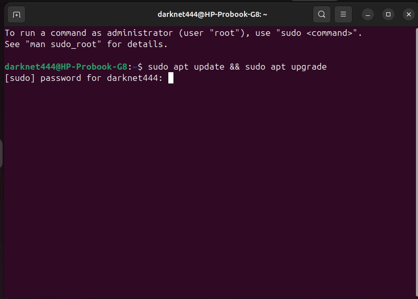 -
Install Software: Use the Ubuntu Software app to find and install programs.
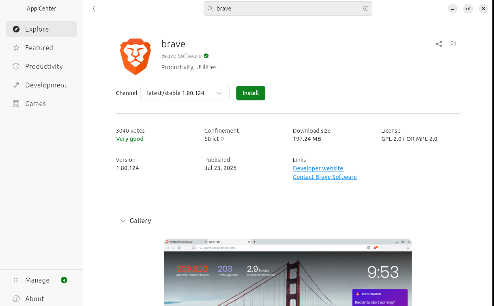 -
Change Settings: Go to system menu (top right) → Settings to customize.
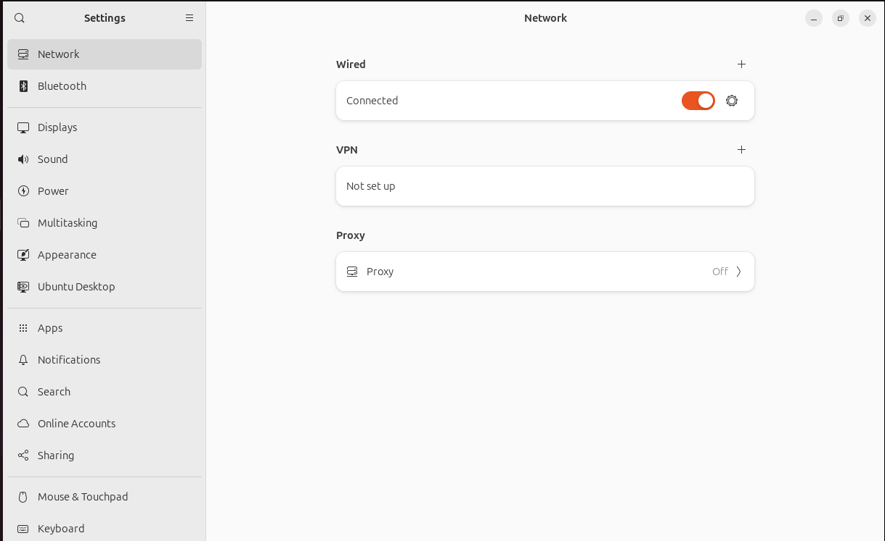 -
Enable Firewall (Optional): In terminal run:
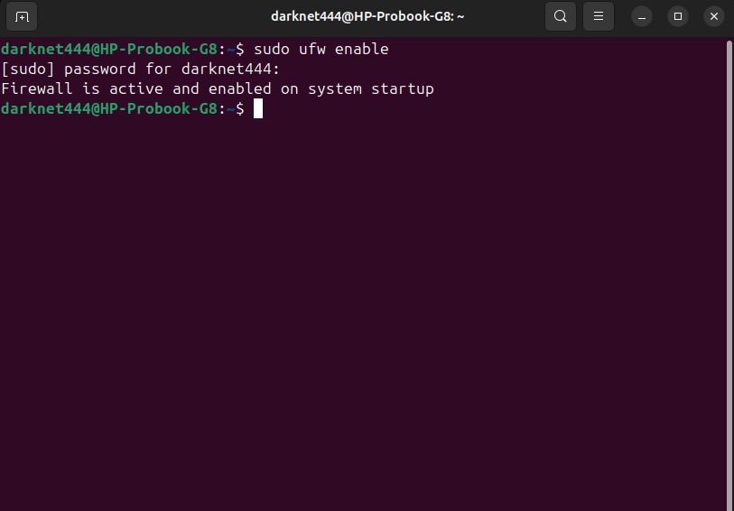
sudo ufw enable - Restart Your Computer: Restart after updates to apply changes.
Summary
Congratulations! You have installed Ubuntu Desktop. Explore the system, seek help online if needed, and add your own images to the steps to improve this guide.